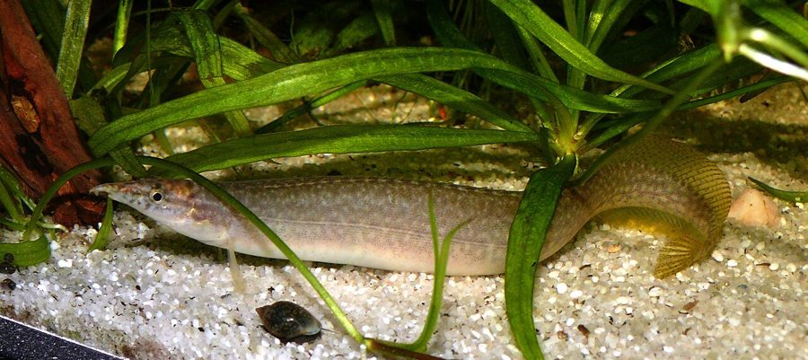

पंकलBarred Spiny Eel
Macrognathus pancalus · Mastacembelidae · FSH-0078

- Scientific name वैज्ञानिक नाम
- Macrognathus pancalus Hamilton, 1822
- Family कुल
- Mastacembelidae
- Hindi हिंदी
- पंकल
- Local names स्थानीय नाम
- barred spiny eel, striped spiny eel, pankal baam, chhoti baam
- Status here यहाँ की स्थिति
- native
- Movement आवागमन
- Resident, here all year
- Known from कहाँ दर्ज
- Others have published records from the wider Awadh–Purvanchal plain, none yet from Basti–Ayodhya अवध–पूर्वांचल से दूसरों के प्रकाशित अभिलेख, बस्ती–अयोध्या से अभी नहीं
- IUCN IUCN
- not evaluated
- Review समीक्षा
- not yet reviewed
When to look कब देखें
Present all year. साल भर मौजूद।
Tell it apart from इनसे अलग पहचानें
पंकल / Barred Spiny Eel
Macrognathus pancalus Hamilton, 1822 — Mastacembelidae
पंकल — तालों, पोखरों और नहरों की कीचड़दार तलहटी में रहने वाली एक छोटी बाम मछली, जिसके थूथन पर तीन पल्लवों वाली नुकीली सूंड़ होती है और पीठ पर 24 से 26 छोटे कांटे होते हैं।
Quick Identification त्वरित पहचान
| Feature | Description |
|---|---|
| Rostrum | Fleshy, pointed, trilobed rostral appendage projecting far beyond the lower jaw |
| Dorsal spines | Series of 24 to 26 short, sharp, isolated erectile spines preceding the soft dorsal fin |
| Caudal fin | Distinctly rounded caudal fin completely separated from the dorsal and anal fins |
| Coloration | Greenish-olive above, yellowish below, with dark vertical bars and yellow spots along flanks |
| Body form | Slender, elongate, serpentine eel-like body adapted for burrowing in mud |
Small, slender spiny eel with an elongated serpentine body and a prominent, pointed, fleshy rostral snout that extends well in front of the lower jaw. The back is armed with 24 to 26 short, sharp, isolated dorsal spines preceding the soft dorsal fin. Unlike larger spiny eels, its rounded caudal fin is completely separate from the dorsal and anal fins. Coloration is greenish-olive with numerous dark vertical stripes and bright yellowish-white spots along the sides.
हिंदी: सांप जैसी पतली छोटी बाम मछली जिसके थूथन पर आगे की ओर निकली हुई नुकीली मांसल सूंड़ होती है। पीठ पर 24 से 26 छोटे तीखे कांटे होते हैं। इसकी पूंछ अलग और गोल होती है।
Morphology शारीरिक संरचना
| Feature | Description | Source |
|---|---|---|
| Total length (maximum) | 18.9 cm TL | Froese & Pauly (2025), FishBase |
| Rostral appendage | Pointed, fleshy, trilobed snout devoid of scales and extending beyond lower jaw | Day (1889) |
| Dorsal spine count | 24 to 26 short, isolated dorsal spines | Day (1889) |
| Caudal fin separation | Caudal fin completely distinct and separated from soft dorsal and anal fins | Talwar & Jhingran (1991) |
The body is elongate, slender, eel-shaped, and moderately compressed posteriorly. The snout is prolonged into a distinct, pointed, fleshy rostral appendage that is trilobed at its tip, lacking scales and teeth. The mouth is small, inferior, with jaws carrying bands of minute villiform teeth. The preorbital spine is absent. The dorsal fin consists of 24 to 26 short, sharp, isolated erectile spines (Jayaram 2010), followed by 30 to 42 soft rays (Talwar & Jhingran 1991). The anal fin possesses 3 spines—the second being the longest and stoutest—and 31 to 46 soft rays (Day 1889). The caudal fin is small, rounded, and completely separated from the dorsal and anal fins by a distinct notch. Minute cycloid scales cover the body. Coloration is greenish-olive on the back, yellowish on the belly, with numerous dark vertical bars and scattered white or yellow spots.
हिंदी: FishBase (Froese & Pauly 2025) के अनुसार अधिकतम कुल लंबाई 18.9 सेमी होती है। मुंह के ऊपर तीन छोर वाली नुकीली सूंड़ होती है (Day 1889)। पूंछ पीठ और गुदा के पंखों से बिल्कुल अलग होती है।
Behaviour & Ecology व्यवहार एवं पारिस्थितिकी
A fossorial, bottom-dwelling nocturnal species that spends the daylight hours completely buried in soft silt, fine sand, or decaying organic mud, with only its eyes and sensitive rostral tip protruding above the substrate. At dusk, it emerges to explore the mud surface and root tangles of floating macrophytes. Its sensitive, trilobed fleshy snout is richly supplied with sensory receptors used to probe soft mud and locate buried wormlets and larvae by touch and chemoreception. When exposed, it slithers with rapid eel-like undulations back into soft mud.
हिंदी: यह कीचड़ में बिल बनाकर रहने वाली रात की मछली है। दिन भर यह कीचड़ के अंदर दबी रहती है और केवल आंखें और सूंड़ बाहर रखती है। रात होते ही यह बाहर निकलकर कीचड़ में कीड़े तलाशती है।
Life Cycle / Phenology जीवन चक्र एवं फेनोलॉजी
Spawning takes place during the pre-monsoon and monsoon months from May to August in quiet, weed-covered waters (Talwar & Jhingran 1991). Mating occurs among submerged macrophyte roots. The female deposits adhesive, spherical, amber-colored eggs that cling to the submerged roots of floating plants such as water hyacinth (Eichhornia) and water lettuce (Pistia) (Day 1889). Fecundity ranges from 300 to 1,200 eggs per female. The eggs hatch within 36 to 48 hours under warm water conditions, and larvae initially feed on microscopic benthic organisms (Day 1889).
हिंदी: प्रजनन मई से अगस्त के बीच वर्षा ऋतु में होता है (Talwar & Jhingran 1991)। मादा जलीय पौधों जैसे जलकुंभी की जड़ों पर चिपचिपे भूरे अंडे देती है (Day 1889)। दो दिन में अंडों से बच्चे निकलकर कीचड़ में शरण लेते हैं।
Host Plants or Prey आहार एवं शिकार
Strictly carnivorous benthic predator. It feeds on small subterranean and epibenthic invertebrates inhabiting soft aquatic mud, including oligochaete tubificid worms, bloodworms (chironomid midge larvae), small freshwater prawns, water boatmen, mayfly nymphs, and mosquito pupae. Its specialized rostral snout probes into silt fissures, allowing it to extract buried larvae that open-water fishes cannot reach.
हिंदी: इसका मुख्य भोजन कीचड़ में रहने वाले लाल कीड़े (ब्लडवर्म्स), केंचुए, झींगा, मच्छर के लार्वा और पानी के कीड़े हैं। यह अपनी लंबी सूंड़ से कीचड़ की दरारों से कीड़ों को खोदकर निकालती है।
Predators / Natural Enemies प्राकृतिक शत्रु एवं शिकारी
Piscivorous predators include larger wetland fishes such as the spotted snakehead (Channa punctata), giant catfish (Wallago attu), and great snakehead (Channa marulius). Wading birds, particularly the Indian Pond Heron (Ardeola grayii), Little Egret (Egretta garzetta), and Asian Openbill (Anastomus oscitans), probe shallow mudflats to capture burrowing spiny eels. Water snakes such as the checkered keelback (Fowlea piscator) frequently dig into mud to capture them.
हिंदी: सौर और पढ़िन जैसी बड़ी मछलियां इसका शिकार करती हैं। बगुला और पनिहा सांप कीचड़ में चोंच मारकर या तैरकर इसे पकड़ते हैं। इसके पीठ के छोटे कांटे इसे निगलने वाले शिकारियों से आंशिक सुरक्षा देते हैं।
Agricultural / Human Relevance कृषि एवं मानव उपयोगिता
A widely consumed small indigenous fish species (SIFS) across northern India. It is caught by rural women and children using woven bamboo traps (bichna, tapa), hand-nets, and simple mud excavation during canal dewatering. Highly regarded for its delicate flavor, soft boneless flesh, and high iron and protein content. It is also collected occasionally for the ornamental aquarium trade due to its fascinating burrowing habits and attractive barred markings.
हिंदी: यह गांवों में बहुत पसंद की जाने वाली स्वादिष्ट और पौष्टिक छोटी मछली है। इसमें कांटे कम होते हैं और यह बच्चों व बुजुर्गों के लिए बहुत सुपाच्य होती है। इसे कीचड़ छानकर या बांस की टोकरियों से पकड़ा जाता है।
Expected Locally क्षेत्रीय संभावना
Not a field record. Written from published accounts for eastern Uttar Pradesh. No confirmed local sighting yet — if you have seen it, that is what the atlas needs.
अभी तक स्थानीय पुष्टि नहीं। यह विवरण प्रकाशित स्रोतों से है, किसी अवलोकन से नहीं।
GBIF holds published records across the northern Gangetic plains and throughout wetlands of eastern Uttar Pradesh. It is expected in sluggish muddy canals, oxbow lakes, roadside drains, and waterlogged paddy channels along the Ghaghara and Kuwana drainage basins. A confirmed local record requires a clear photograph displaying the pointed rostral appendage, 24 to 26 dorsal spines, and separate rounded caudal fin with date and locality details.
हिंदी: यह पूर्वी उत्तर प्रदेश के तालों, पोखरों, धान के खेतों की नालियों और कीचड़दार नहरों में संभावित है। पुष्टि के लिए थूथन की सूंड़, पीठ के 24-26 कांटे और अलग पूंछ दर्शाने वाली स्पष्ट तस्वीर चाहिए।
Distribution वितरण
Widely distributed across South Asia, from Pakistan through India, Bangladesh, and Nepal. In northern India, it occurs abundantly throughout the alluvial wetlands, slow streams, and irrigated agricultural tracts of the Indus and Ganges basins.
हिंदी: यह भारत, पाकिस्तान, नेपाल और बांग्लादेश के मैदानी जलक्षेत्रों में व्यापक रूप से पाई जाती है। उत्तर भारत के सभी दलदलों, पोखरों और नहरों में यह बहुत आम है।
Research Questions शोध प्रश्न
- How do pesticide residues in paddy field mud affect the burrowing behavior and survival of Macrognathus pancalus?
- What are the specific chemoreceptive structures on the trilobed rostral appendage that enable mud-dwelling prey detection?
- What is the tolerance limit of this species to extreme dissolved oxygen depletion during summer wetland drying?
- How do seasonal mud harvesting and brickfield excavation impact local benthic population densities?
- क्या धान के खेतों में कीटनाशकों के प्रयोग से कीचड़ में रहने वाली इस मछली के जीवन चक्र पर बुरा असर पड़ता है?
- क्या गर्मियों में तालों के सूखने पर यह नमी वाली गहरी कीचड़ में दबकर लंबे समय तक जीवित रह सकती है?
Similar Species समान प्रजातियाँ
| Similar species | Distinction | Hindi distinction | |
|---|---|---|---|
| Zig-zag Spiny Eel \ | Mastacembelus armatus | Much larger adult size; caudal fin joined to dorsal and anal fins; bold zig-zag black markings | बड़ी बाम मछली काफी विशाल होती है (90 सेमी तक), इसकी पूंछ पीठ के पंख से जुड़ी होती है और उस पर जिग-जैग निशान होते हैं |
| Cuchia \ | Monopterus cuchia | Complete lack of fins and dorsal spines; robust muddy-brown body with tiny rudimentary gill opening | कुचिया मछली में कोई पंख या कांटे नहीं होते, इसका शरीर चिकना और गहरा मटमैला होता है |
| Freshwater Garfish \ | Xenentodon cancila | Long, slender beaked surface predator with needle-like toothed jaws; lacks dorsal spines and rostral lobe | सुइया मछली पानी की सतह पर तैरती है, इसके दोनों जबड़े चोंच जैसे लंबे और दांतों से भरे होते हैं |
Field rule: Small spiny eel with fleshy trilobed snout, 24 to 26 short dorsal spines, and rounded caudal fin completely separate from dorsal and anal fins.
हिंदी: थूथन पर तीन छोर वाली मांसल सूंड़, पीठ पर 24 से 26 छोटे कांटे और शरीर के पंखों से अलग गोल पूंछ वाली छोटी बाम मछली।
Taxonomy & Classification वर्गिकी एवं वर्गीकरण
Original description. Hamilton (1822), An Account of the Fishes Found in the River Ganges and Its Branches, p. 30; type locality: Bengal, India.
Subspecies. Monotypic species recognized across its South Asian distribution.
Family and order placement. Placed in the spiny eel family Mastacembelidae, order Synbranchiformes, class Actinopterygii.
IUCN status rationale. Not evaluated by the IUCN Red List; an abundant and widespread benthic fish species across lowland wetlands.
हिंदी: फ्रांसिस हैमिल्टन ने 1822 में बंगाल से इसका पहला वैज्ञानिक विवरण दिया था। यह मैस्टासेम्बेलीडे (बाम) कुल की सदस्य है और उत्तर भारत के तालों में पाई जाती है।
Photo Gallery फोटो गैलरी
No photos yet — add field photos to media/species/barred_spiny_eel/ and run node scripts/sync_photos.js.
Photos needed आवश्यक फोटो
- [ ] Lateral view of live specimen showing dark vertical bars and yellow spots (काली धारियों और पीले धब्बों को दर्शाती जीवित मछली का पार्श्व दृश्य)
- [ ] Close-up of head highlighting fleshy, pointed, trilobed rostral appendage (थूथन पर तीन पल्लवों वाली मांसल सूंड़ का क्लोज-अप मैक्रो दृश्य)
- [ ] Dorsal profile displaying series of 24 to 26 short, sharp erectile spines (पीठ पर 24 से 26 छोटे कांटों की कतार का स्पष्ट दृश्य)
- [ ] Detail of caudal fin showing complete separation from dorsal and anal fins (पीठ और गुदा के पंखों से अलग गोल पूंछ का स्पष्ट दृश्य)
- [ ] Specimen emerging from soft silty mud in natural aquarium setting (कीचड़ से बाहर निकलती हुई पंकल मछली का दृश्य)
- [ ] Typical muddy oxbow lake or paddy drainage channel habitat (कीचड़दार ताल या धान के खेत की नाली का प्राकृतिक परिदृश्य)
References संदर्भ
- Original description: Hamilton, 1822 — see GBIF.
- Day, F. (1889). The Fauna of British India, Including Ceylon and Burma: Fishes. Vols. 1–2. Taylor & Francis, London.
- Talwar, P. K. & Jhingran, A. G. (1991). Inland Fishes of India and Adjacent Countries. Vols. 1–2. Oxford & IBH Publishing Co., New Delhi.
- Jayaram, K. C. (2010). The Freshwater Fishes of the Indian Region. Narendra Publishing House, Delhi.
- Froese, R. & Pauly, D. (Eds.) (2025). FishBase. World Wide Web electronic publication.
- GBIF Occurrence Data — Macrognathus pancalus, India (2025).
Source file: species/fauna/fish/barred_spiny_eel.md